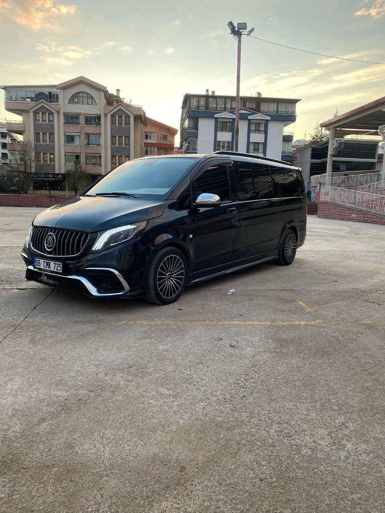
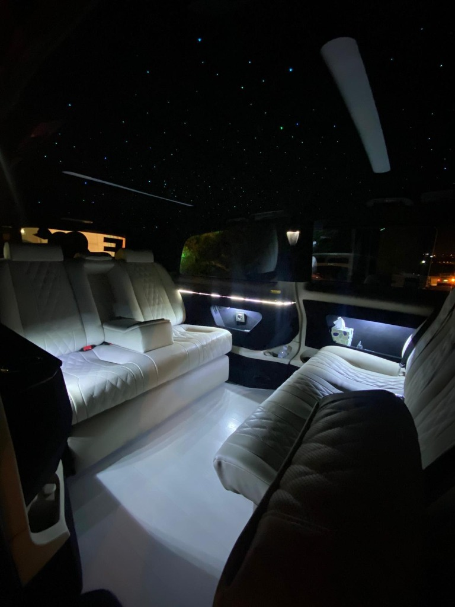
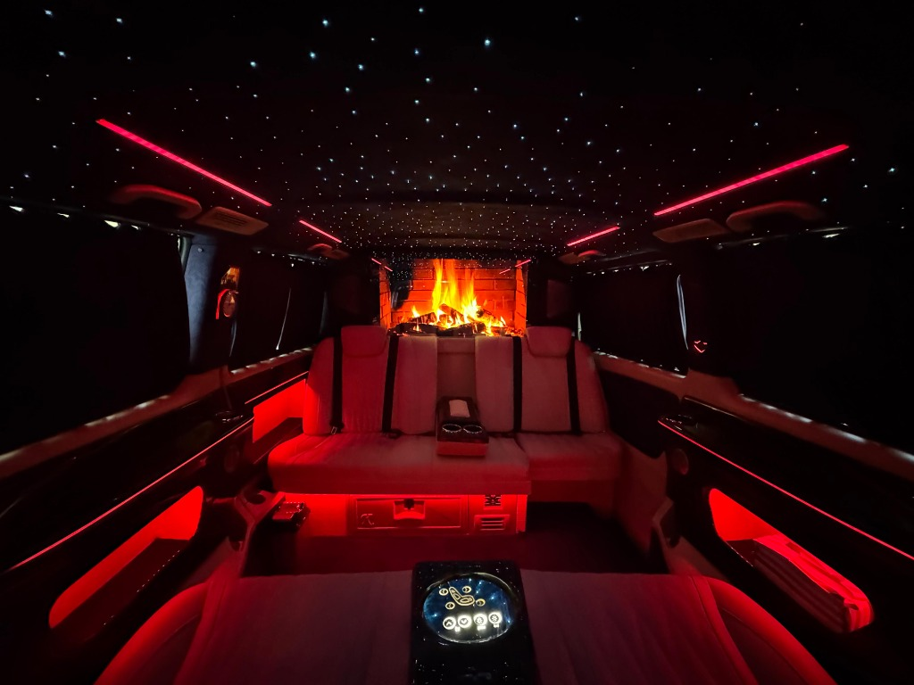

Düğün Hizmeti
Düğününüz hayatınızın en özel günü. Bu kadar önemli bir günde ulaşımınız da o güne yakışır kalitede olmalı. VipTrip olarak Ankara'da VIP gelin arabası kiralama hizmeti sunuyoruz. Mercedes Vito Maybach araçlarımızla özel gününüzü unutulmaz kılıyoruz.
Paketlerimizde yakıt, profesyonel şoför, araç süsleme ve çiçek dahildir. Siz sadece gününüzün tadını çıkarın, gerisini bize bırakın.
Klasik bir düğün arabası ile VIP gelin arabası arasındaki fark, sadece aracın markası değildir. VIP hizmetle birlikte gelen bütünsel bir deneyim vardır:
En popüler gelin arabası seçeneğimiz. Maybach tasarım iç mekan, yıldızlı tavan, gizlilik camları ve geniş iç hacmiyle gelinliğinizle rahatça seyahat edebilirsiniz. Kabarık gelinlikler için ideal yüksek tavanlı yapısıyla öne çıkar.
Zarafet ve prestijin buluşma noktası. Sadece gelin ve damat için özel makam aracı. Siyah deri koltuklar, şömine görüntülü ekran ve tam gizlilik için ideal.
Tüm paketlerimizde yakıt + profesyonel şoför + araç süsleme + çiçek dekorasyonu dahildir. Ek bir ücret ödemezsiniz.
Mercedes Vito VIP
Mercedes Vito VIP + Özel Süsleme
VIP gelin arabalarımızın iç ve dış görünümlerini inceleyin. Yıldızlı tavan, ambiyans aydınlatma ve Maybach tasarım koltuklar ile düğününüzü taçlandırın.





Gelin arabası rezervasyonunuz sadece 3 adımda tamamlanır:
Düğün sezonu boyunca yoğunluk yaşanmaktadır. En az 2-3 hafta önceden rezervasyon yapmanızı tavsiye ederiz. Haziran-Eylül aylarında erken rezervasyona özel indirimler uygulanmaktadır.
Mercedes Vito VIP Maybach ile düğününüze yakışır bir başlangıç yapın.
Yakıt, şoför ve süsleme dahil paketler 9.000₺'den başlayan fiyatlarla.
Paketimiz gelin evinden düğün salonuna kadar tüm güzergahı kapsar. Ayrıca fotoğraf çekimi için ara duraklarda bekleme hizmeti de dahildir. Gelin alayı, nikah merasimi ve salon transferi tek paket içinde sunulur.
Evet, tüm paketlerimizde profesyonel çiçek süsleme, kurdele ve dekorasyon dahildir. Kaput üzerine çiçek aranjmanı, ayna süslemesi ve kapı kollarına kurdele bağlama hizmetimiz mevcuttur. Özel tema istekleriniz de karşılanabilir.
Mercedes Vito VIP araçlarımız yüksek tavanlı yapılarıyla kabarık gelinlikler için idealdir. Geniş iç hacim sayesinde gelinliğiniz zarar görmeden rahatça yolculuk edebilirsiniz. Kapı açıklığı da oldukça geniştir.
Özellikle yaz aylarında (Haziran-Eylül) yoğunluk yaşanmaktadır. En az 2-3 hafta önceden rezervasyon yapmanızı öneririz. Popüler Cumartesi günleri için 1 ay öncesi idealdir.
Evet, düğün konvoyunuz için birden fazla Mercedes Vito, Sprinter ve S-Class araç tahsis edebiliriz. Konvoy paketi için özel indirimler mevcuttur. Genellikle gelin aracı + 1-2 konvoy aracı tercih edilmektedir.
Tüm şoförlerimiz düğün günü için koyu renk takım elbise giyer. Beyaz eldiven ve şapka opsiyonu da mevcuttur. Şoförlerimiz düğün protokolüne hakim, deneyimli sürücülerdir.
Düğün gününüzün ötesinde tüm VIP ulaşım ihtiyaçlarınız için buradayız.
 Transfer
Transfer
Şehir içi ve havalimanı VIP transfer hizmeti ile güvenli ve konforlu yolculuk.
Detaylı Bilgi Havalimanı
Havalimanı
Havalimanından şehir merkezine CIP karşılama ve VIP transfer hizmeti.
Detaylı Bilgi Kiralama
Kiralama
Günlük ve saatlik şoförlü Mercedes araç kiralama hizmeti.
Detaylı Bilgi